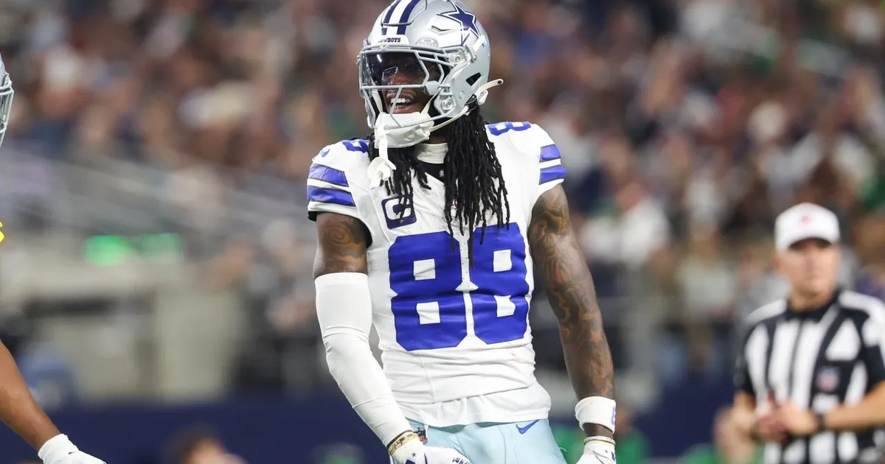

CeeDee Lamb just passed Michael Irvin — six straight 1,000-yard seasons, and no Cowboy has ever done that
A nine-yard catch in the first quarter made CeeDee Lamb the first player in Cowboys history with six consecutive 1,000-yard receiving seasons, breaking his tie with Michael Irvin — and he added his 50th career touchdown catch before halftime.

Disclosure: this post contains affiliate links. I earn a commission on qualifying purchases.
The catch that broke the tie
It took one nine-yard reception in the first quarter. CeeDee Lamb caught it, turned upfield, and became the first player in Dallas Cowboys history to record six consecutive 1,000-yard receiving seasons.
He had been tied with Michael Irvin at five straight. Now he stands alone.
Lamb finished the first half with nine catches for 103 yards and a touchdown against the Tennessee Titans, and the record was the story of the day in Arlington — a franchise mark held by a Hall of Famer, broken by the receiver who has carried the Cowboys' offense for half a decade.
Fifty, and fast
Lamb did not stop at the yardage record. In the second quarter he caught an eight-yard touchdown pass from Dak Prescott — the 50th receiving touchdown of his career.
He reached 50 in his 106th career game, the third-fastest in team history to the mark. Only Bob Hayes (66 games) and Dez Bryant (70 games) got there quicker.
The Irvin chase isn't over
Breaking Irvin's streak record does not mean Lamb has caught Irvin. The Hall of Famer recorded seven total 1,000-yard seasons across his 12-year career with Dallas, so Lamb still needs two more to pass that mark — and Irvin's own streak was cut short by a substance-abuse suspension in 1996 that cost him games.
Lamb is already third in Cowboys history in receiving yards, but he still needs more than 3,000 yards to pass Irvin for second. At 27, with the way he produces, that is a matter of time rather than a question.
The consistency is the story. Lamb's only season below 1,000 yards was his rookie year in 2020, when he put up 935 yards on 74 catches while Prescott missed more than half the season. Every year since, he has cleared 1,000 — through coaching changes, quarterback injuries, and a 4-6 team that has spent this season searching for answers everywhere except wide receiver.
What it means
Dallas came into Sunday at 4-6, clinging to playoff hope with a defense that has struggled all year. The offense is the engine keeping the season alive, and Lamb and George Pickens are at the heart of it.
Records like this one do not rescue a season on their own. But they do settle an argument: in a franchise that has employed Michael Irvin, Dez Bryant, and Bob Hayes, no receiver has ever been this productive for this long, this consistently. Lamb is not chasing Cowboys history anymore. He is writing it.
Gear up: Fanatics